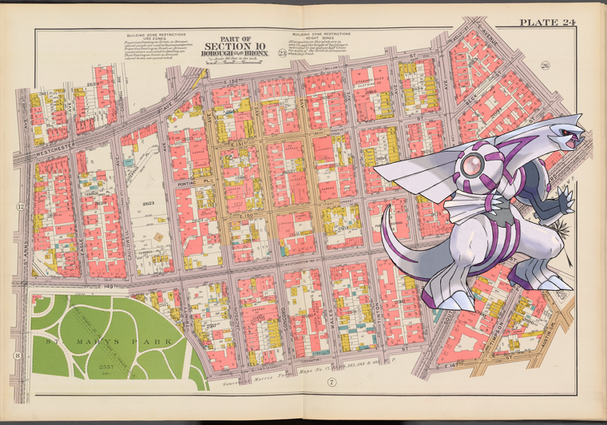

Pokémon in the NYPL archives
2018-7-15 08:10:09

Palkia –
Double Page Plate No. 24, Part of Section 10, Borough of the Bronx: [Bounded by Westchester Avenue, E. 152nd Street, Kelly Street, Avenue St. John, Southern Boulevard, E. 149th Street, Austin Place, E. 147th Street, Trinity Avenue, (St. Mary's Park) E. 149th Street and St. Anns Avenue]